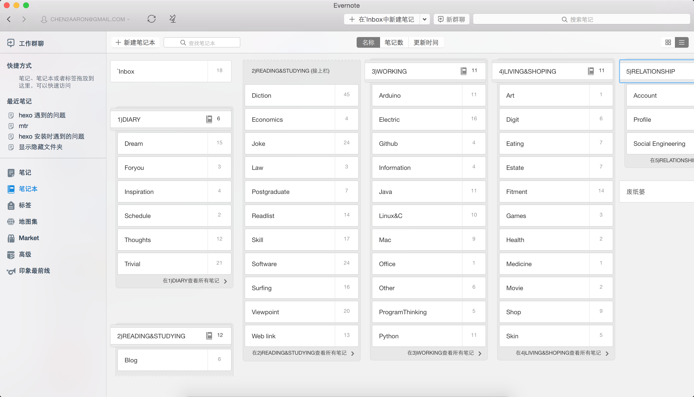

为什么选择 Mac?
相比一般用户，专业用户有一个很大的特点是：他们清楚自己要什么。从另一个方面看，他们也清楚自己不需要什么，以及如何用替代工具达到一样的目的。
去问一个普通电脑用户（非 IT，甚至普通 IT 行业人员）：让你换 Mac，有什么担心的？
他们通常会说：“我那些软件还能不能用？”
如果你跟上问一句：“你用的最多的是什么软件？”
基本上除了 QQ 迅雷，很难听到任何新鲜的东西。但是真的给他们一台 Mac 之后，他们很快会开始问：百度视频浏览器怎么装，没有 360 怎么办，五笔怎么用……也就是说，他们太习惯于自己每天接触的那些“东西”，而不是他们完成的任务。电脑对他们是一个玩具，上面每一个按钮都是“按钮”本身，这是他们和专业人士最大的不同。给他们换一个玩具，按钮颜色或者触感不同，他们都有一种被冒犯的感觉。这，是阻挡普通人换系统最大的原因。
程序员、专业人员换系统的时候，通常有两种情况：目标平台有更适合他们的工具，或者目标平台有一样、或者至少可以接受的、能够达到之前目的的替换工具。这种“目标驱动”的特点让他们能够解决未知的问题，并且（就从 Windows 切换到 OS X 这个具体情况来说）在大多数情况下得到更优的解。他们首先通过寻找替换工具，满足了“完成我必须完成的任务”这个基本需求。这种“任务驱动”和“解决问题”的能力是定义一个“专业人士”的根本所在。
在这个需求被达成之后，他们才会有更多的精力去进行回顾和判断，判断之前做出的选择，如切换系统，是不是合适自己；在这个过程中进行的判断和研究有没有问题；现在使用的工具有什么更多的不同是之前不了解的。这种回顾和扩展，是对自己作为一个“专业人士”的技能领域的不断自我改进，这同样是一个优秀的“专业人士”最重要的特性。
所以，回到问题，为什么专业人员（例如程序员和设计师）更青睐 OS X / Mac 电脑？
答案：因为他们有能力认识到自己需要解决的是什么问题，而不是把目光局限在“我有什么工具”本身；他们有能力和职业习惯进行研究、判断和做出改变（改进）；他们有兴趣探索未知的世界，寻找“更优解”而不是停留在“我一直都是这么做的”这个程度上。这些“专业人士”的性格特征允许他们不断前进，找到、并且创造，更多更好的东西。
Because they CHANGE things.
引用了这么多，好吧我承认就是为了biger，下面进入正题
Best app for Mac
1. 套件管理器homebrew
类似于Linux的apt-get
主要用于安装命令行导向型工具
安装方法：点开spotlight，搜索terminal，打开终端窗口, 粘贴以下脚本。
ruby -e "$(curl -fsSL https://raw.githubusercontent.com/Homebrew/install/master/install)"
详细介绍见官网Homebrew
接着就是使用brew安装软件了
比如git，wget, curl
brew install git
brew install wget
brew install curl
当然卸载也很方便
brew uninstall xxxx
2. Xcode
直接进app store搜索吧
之前没装Xcode的时候配置环境各种报错，安装后一切清净了
3. 日常软件：
Evernote 笔记之神，我用了3年了，主要用来写日志 & 收集平时看到各方面的好文
Xmind 思维导图
Chrome 强大的扩展功能 详细介绍 关于Chrome的那些小技巧
MplayerX 近乎与完美的播放器，轻量、高效、流畅、全能，系统自带的太辣鸡，好多格式都不支持
Microsoft office 就算在 Mac下也不得不服，还好现在出了2016预览版，不过 keynote确实比 PPT更加炫酷
QQ，迅雷，百度云啥的看自己习惯
4. 文本编辑器：
这里我用 Vim跟 Sublime （Emacs用户不要砍我）
Vim之前学 C的时候在 Linux环境下常用，现在不是很常用了，但在程序员圈子依然宝刀未老；Sublime在功能和速度上不输给 Vim，无学习难度，上手就用，界面美观大方，还有vim模式，强烈推荐。
Vim不用安装，Mac系统OS X下自带 终端下使用命令
vi －v
查看版本号 ctrl+z 退出
Sublime请用3.0版本 Sublime官网下载
网上有篇文章，Emacs和Vim:神的编辑器和编辑器之神，写得超级搞笑，有兴趣的小伙伴可以看看
5. Markdown编辑器：
它设计的初衷就是让写字的人专注于写字，用纯文本简单的符号标记格式，最后再通过工具转换成鬼畜的 HTML/XHTML。
Mac上推荐 Mou，没有原因就是NB，自从用了Mou妈妈再也不用担心我狗屎一般的排版辣，没错！现在这篇文章就是用 Mou编辑的
下好后，语法过目一遍，看下Actions里面的快捷键操作就行了，多试试，20分钟就能学会个大部分了
6.提高效率的工具
6.1 Moom
还在像傻哔一样花半天找到窗口边框笨手笨脚地缩放大小么？用Moom吧，能快速排好窗口，自定义想要的窗口大小。
6.2 Alfred
这是一个神奇的快速启动软件，就为了它，你就值得买个Mac。MacTalk里谦虚的称它为“神兵利器”。你可以用它来： 打开任何应用 查找文件 执行shell命令 当计算器用 直接写email 在Google/Amazon/Wikipedia上搜索条目 * … …
嗯，以上只是它的普通功能，只有这些还不足以称之为伟大。Alfred之牛掰，在于其可编程的第三方workflow插件机制，这样可以在Alfred里搜豆瓣图书，搜Github仓库，查看天气或PM2.5，搜索自己的Evernote笔记，查API文档，一切能想到的，都可以实现。
详细请查看Alfred全攻略
文章到此结束，其实还有好多优秀的软件，以后有机会，等我使用后在逐一介绍，嘻嘻